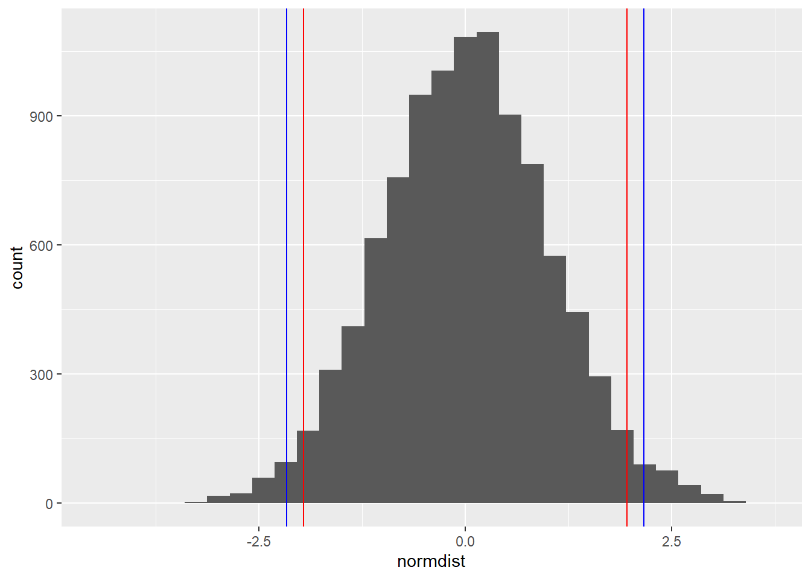
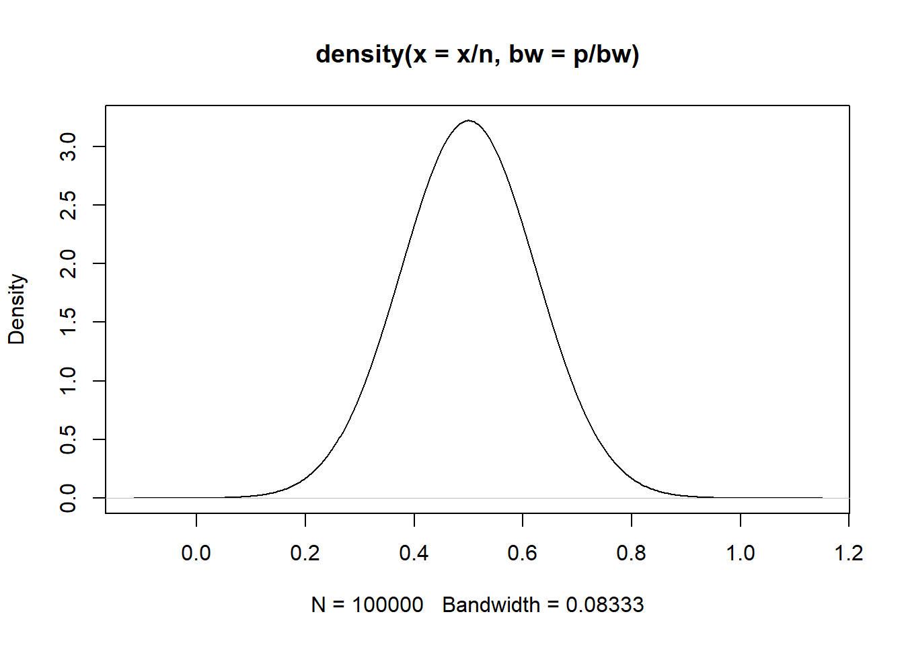

library(tidyverse)
library(Sleuth3)
data(case1802)
df <- case18022 Props, Risk & Odds
Learning Objectives
At the end of this week you should be able to:
- Identify potential issues with small sample sizes in tables of counts.
- Describe the situations in which a comparison of odds ratios is more appropriate than a comparison of proportions.
- Indicate the one-to-one relationship between proportions and odds.
- Describe the multinomial and Poisson distributions and the connection between them.
In R:
- Perform tests for a difference in proportions and an odds ratio.
- Use simulations to understand the performance of statistical tests for count data when the sample sizes are small.
- Prepare and submit an R markdown script.
Task list
In order to achieve these learning outcomes, please make sure to complete the following:
- Review Module 2 Readings and
LecturesSubmit Module 2 HomeworkSubmit Module 2 Lab- Take the Module 2 Content Quiz and
R QuizParticipate in the Module 2 Discussion
Lectures
Bionomials
A binomial random variable is a count of the number of times E occurs in the n trials.
Examples
- Medicine: The number of patients in a clinical trial that showed improvement on a new treatment.
- Politics: The number of voters in an exit poll sample who said they voted for Hillary Clinton.
- Ecology: The number of wetlands that have seen an increase in the number of bird species.
- Business: The number of $5 off coupons redeemed on a customer appreciation day.
- Health: The number of women with heart disease among a sample of obese women
A binomial random variable is defined as the sum of n independent Bernoulli random variables, all with probability p.
You can use R to calculate binomial coefficients (see the function choose)
calculate properties of binomial random variables—for instance their probability and/or their cumulative probability (see the functions pbinom and qbinom)
Vit C and colds example “Sleuth3”, case1802
In 411 placebos, 335 colds
Z ∼ Bernoulli(p).
If we think about this as a binomial count random variable
n is 411, X is 335. p is X/n
Proportions
Comparing two pops on the basis of a binary outcome.
Vit C example:
818 Volunteers in placebo or not. Did the Vit C folks get less colds.
The estimate for p_1 is 335/411, for p_2 it’s 302/407, based on the cont. table.
Are these differences reflected in the general population?
\(H_0: p_1 = p_2\)
We need to know the sampling distribution of p1-p2. That is the the hist from repeat samples from the pop of interest. (or bootstrapped?)
X ∼ bin(n,p) and for large n, the sampling distribution of pˆ = X/n is Normal with mean p and variance np(1−p).
A good metric is np>5 and n(1-p)>5.
If n1 and n2 are large, the sampling dist for p1 - p2 is normal and there’s an exp for the VAR
test for diff in props with prop.test. Compare with chi.test.
VitC = matrix(c(335,76,302,105),2,2,byrow = T)
prop.test(VitC)
2-sample test for equality of proportions with continuity correction
data: VitC
X-squared = 5.9196, df = 1, p-value = 0.01497
alternative hypothesis: two.sided
95 percent confidence interval:
0.01391972 0.13222111
sample estimates:
prop 1 prop 2
0.8150852 0.7420147 For large sample sizes the continuity correction is less important.
Confidence interval is for the difference in proportion. There is a difference here.
chisq.test(VitC)
Pearson's Chi-squared test with Yates' continuity correction
data: VitC
X-squared = 5.9196, df = 1, p-value = 0.01497A chi^2 test for homogeneity tests if the prop of success is the same in two or more groups.
Odds and Odds Ratios
For the VitC case, the diff in prop estimates is large at 7%. That indicates the prop of gettng a cold is about 7% lower than placebo.
But if the difference is small.
If p1 is 4 times p2, then you can talk about odds to talk about the multiplicative difference.
odds are p over 1-p. The odds in the Vit c ex are 2.876 or 23 colds for every 8 not, 23 to 8 odds.
There is a stat for the ratio of two odds called phi. An odds ratio can be interpreted as a multipliicative difference between two odds.
The odds of success are twice that of pop 1.
She talks about the polio vaccine example. The odds of infant paralysis with and without a polio vacccine. Placebo was 2.5 times as likely to be paralyzed.
- For rare events, use odds.
- use odds for retrospective studies.
Retrospective studies are like taking groups for cancer and not, then looking back to see if they smoke.
Multinomial
The vit c and polio examples are both cross-classification of two binary variables.
Both the explanatory and responses are binary.
Xj ∼ bin(200000,pj)
For both groups xj is a random variable. 200k is the size and prob is pj
These distributions tell us about he difference between the groups.
This is an important point: it’s by using a probability model (distribution) to represent data that we’re able to proceed with statistical inference.
Beyond 2x2 tables, (for her, the second number is the number of response variables)
The response variable has two columns, so we will model it with a binomial dist.
A test of homogeneity will tell you that they are different, a log-reg will tell more.
In a 2×J contingency table, with J > 2, there are two levels of the explanatory variable (rows) and J levels of the response (columns).
In the case the response variable is categorical with more than two categories.
- We can use the multinomial distribution to model these responses, and turn to multinomial logistic regression
- another method for this situation in this module’s lab
- if the sample sizes are large enough a chi-squared test for homogeneity can help you decide whether the two multinomial distributions are the same
A multinomial random variable is represented by a vector of values. Are any of the category probabilities different depending on levels of the explanatory variables?
If there are more than two dimensions to the table, we usually turn to regression models:
- When the response is binary, we’ll use logistic regression
- When the response is categorical, we’ll use multinomial logistic regression or log-linear regression
Poisson Counts
Used for count data obtained in a time or space.
The probability distribution, or probability mass function of Y is:
\(Pr(Y=y) = \frac{\lambda^y e^{-\lambda}}{y!}\)
where y ∈ {0, 1, 2,…} and \(\lambda\) > 0.
If Y1,Y2,…,Yk are all independent Poisson counts, each possibly with it’s own rate parameter, lambda 1:k, then if we condition on the total counts (i.e., the sum of the Yj’s), we can think of the conditional counts, Y1,…,Yk|M ∼ multinomial(p1,…,pk),
where M = Y1 +Y2 +··· +Yk and \(\lambda_j\) pj = , \(\Lambda\) the sum of the lambdas
dems rpbs, and inds at 330 425 261 with ps .32,.42,.26.
If each count is y1~Poisson(\(\lambda_i\)) then the connection to the multinomial gives:
(Y1,Y2,Y3)|M ∼ multinomial(p1,p2,p3)
Inferences will be the same whether we consider the counts to be Poisson distributed and then condition on the total, or multinomial distributed from the start. Convenient for modeling in the next several models.
Lab
Notes
Methods for making inference about the association between two categorical variables in a larger population of interest.
X and Y, are independent if they are uninformative about one another in terms of the probability of occurrence of specific outcomes.
In a cont table, The cell probability for the i,j cell is equal to the marginal probability of the ith row times the marginal probability of the jth column.
We say that a contingency table is the most consistent with statistical independence if P_ij = p_i p_j, for all i, j. The extent to which the observed counts in a table deviate from P_ij = p_i p_j for all i, j provides us with evidence against the statistical independence hypothesis.
Use the mosaic or sieve plot as a tool for evaluating statistical independence visually.
Chi-Squared Statistic
Comparing the observed table to an expected table where we expect them to be independent.
you should NOT do this smoothing in practice.
Chi squared test of independence, test of association, or a test of homogeneity.
“large” means that all cell counts are 5 or larger and the table total is at least 30.
continuity correction is less important with large N.
For small sample sizes, re-sample. Our re-sampling technique is closer to the true reference distribution of the Chi-sq statistic than is the distribution when the sample size is small.
Once the re-sampling script computes a lot of chi-squared statistics (stored in resamp$stats) for tables drawn under the hypothesis of independence, we see where we stand by plotting the distribution of those re-sampled chi-squared statistics, and comparing it to the theoretical Chi-squared distribution on a plot.
Fisher’s exact test was designed for precisely the situation of the Lady Tasting Tea (statistically, both margins are fixed).
chisq.test() and fisher.test() only test for independece.
I am not certain I understand fixed margins.
Functions
- sieve draws the outline of the mosaic plot that we would expect to see under the assumption of independence
- margin.table
- chisq.test
Prop vs \(\chi^2\)
prop.test can be used for testing the null that the proportions (prob of success) in several groups are the same, or that they equal certain given values.
Test of equal proportions:
# p_1 = pop proportion
# n_1 = sample size
# x_1 = number of successes
# phat_1 = sample proportions
# qhat_1 = (1 - phat_1) the compliment of phat_1
# pooled sample prop, pbar = (x_1 + x_2) / (n_1 + n_2)
# qbar = compliment of pbar
# z = ( (phat_1 - phat_2) - (p_1 - P_2) ) / sqrt( (pbar*qbar/n_1) + (pbar*qbar/n_2) )violent <- as.table(
matrix(c(102, 53, 806, 614),
nrow = 2,
dimnames =
list(vict = c("victim", "control"),
inCrime= c("Yes", "No")
)))
violent inCrime
vict Yes No
victim 102 806
control 53 614# p_1 = pop proportion, unknown
# n_1 = sample size
n_1 <- 102 + 806
n_2 <- 53 + 614
# x_1 = number of successes
x_1 <- 102
x_2 <- 53
# phat_1 = sample proportions
phat_1 <- x_1/n_1
phat_2 <- x_2/n_2
# qhat_1 = (1 - phat_1) the compliment of phat_1
qh1 <- (1 - phat_1)
qh2 <- (1 - phat_2)
# pooled sample prop, pbar = (x_1 + x_2) / (n_1 + n_2)
pbar <- (x_1 + x_2) / (n_1 + n_2)
# qbar = compliment of pbar
qbar <- (1-pbar)
# z = ( (phat_1 - phat_2) - (p_1 - P_2) ) / sqrt( (pbar*qbar/n_1) + (pbar*qbar/n_2) ), where (p_1 - P_2 = 0)
z <- ( (phat_1 - phat_2) - (0) ) / sqrt( ((pbar*qbar)/n_1) + ((pbar*qbar)/n_2) )
z[1] 2.164191normdist <- rnorm(10000)
ggplot() +
aes(normdist) +
geom_histogram() +
geom_vline(xintercept = -qnorm(.975), color = "red") +
geom_vline(xintercept = qnorm(.975), color = "red") +
geom_vline(xintercept = -z, color = "blue") +
geom_vline(xintercept = z, color = "blue")`stat_bin()` using `bins = 30`. Pick better value with `binwidth`.
dnorm(z)[1] 0.03835767pnorm(z, lower.tail = F)[1] 0.01522483prop.test(violent)
2-sample test for equality of proportions with continuity correction
data: violent
X-squared = 4.3205, df = 1, p-value = 0.03765
alternative hypothesis: two.sided
95 percent confidence interval:
0.002537413 0.063211651
sample estimates:
prop 1 prop 2
0.11233480 0.07946027 chisq.test(violent)
Pearson's Chi-squared test with Yates' continuity correction
data: violent
X-squared = 4.3205, df = 1, p-value = 0.03765prop.test(violent, correct = F)
2-sample test for equality of proportions without continuity correction
data: violent
X-squared = 4.6837, df = 1, p-value = 0.03045
alternative hypothesis: two.sided
95 percent confidence interval:
0.003837699 0.061911365
sample estimates:
prop 1 prop 2
0.11233480 0.07946027 z[1] 2.164191sqrt(4.6837)[1] 2.164186The the z-test for equal proportions is equivelent to prop.test with the yates correction set to false. From there, prop.test is equal to the chi square test and the z stat is the square root of the chi2 stat.
chisq.test performs chi-squared contingency table tests and goodness-of-fit tests.
Use the chi-square test of independence when you have two nominal variables and you want to see whether the proportions of one variable are different for different values of the other variable. Use it when the sample size is large.
The null hypothesis is that the relative proportions of one variable are independent of the second variable; in other words, the proportions at one variable are the same for different values of the second variable.
Fisher’s exact test is more accurate than the chi-square test of independence when the expected numbers are small,
Reading
open stats ch 6.
The sampling distribution for p hat based on a sample of size n from a population with a true proportion p is nearly normal when:
- The sample’s observations are independent, e.g. are from a simple random sample.
- We expected to see at least 10 successes and 10 failures in the sample, i.e. np ≥ 10 and n(1 − p) ≥ 10. This is called the success-failure condition.
When these conditions are met, then the sampling distribution of p hat is nearly normal with mean p and standard error SE = sqrt(p(1−p)/n).
Categoical data Analysis
Starts on page 19 of the pdf.
Book focuses on methods for categorical response variables.
Variables without a natural order are nominal variables, order is irrelevant. Ordinal variables are ordered, but distances are unknown. Interval variables do have distance. They’re comparable by their ratio.
It’s commmon to treat discrete data with lots of options as continuous.
Dists for categories.
The total number of successes y has binomial distribution with bin(n, pi)
Skewness is described by E(Y-mu)3/sigma3 = (1-2pi)/ sqrt(npi(1-pi).
It’s symmetric at pi = .5. and as n grows above 5 it gets more normal.
For multinomial,
E(n_j) = npi_j, var(n_j) = npi_j(1-pi_j), cov(n_k, n_k) = -npi_jpi_k.
Poisson’s skewness is E(Y-mu)3/sigma3 = 1 / sqrt(mu). It approaches normality at mu increases above 10.
Counts exhibit variability exceeding that predicted by the binomail or Poisson. This is overdispersion. There is a negative binomial dist for dispersed data. Chs 4, 13 and 14 for overdisp.
Chi2 skewness is sqrt(8/df). var = 2df(). Approaches normal above 50.
HW
Quizzes
R
Which of the following returns the 99th percentile (0.99 quantile) of the standard normal distribution?
sqrt(qchisq(0.98, 1))[1] 2.326348qnorm(.99)[1] 2.326348The p-value that you get from a chi-square test without a continuity correction is:
The same as you get from a proportions test without continuity correction.
The R command mosaic(matrix(c(30,30,30,30),2,2,byrow=T)) produces a mosaic plot that suggests independence between two variables. Which of the following produces a mosaic plot that suggests the two variables are farthest from independence?
library(vcdExtra)Warning: package 'vcdExtra' was built under R version 4.3.3Loading required package: vcdWarning: package 'vcd' was built under R version 4.3.3Loading required package: gridLoading required package: gnmWarning: package 'gnm' was built under R version 4.3.3
Attaching package: 'vcdExtra'The following object is masked from 'package:dplyr':
summarisemosaic(matrix(c(30,30,30,30),2,2,byrow=T))# mosaic(matrix(c(40,50,20,10),2,2,byrow=T))
mosaic(matrix(c(50,30,10,30),2,2,byrow=T))# mosaic(matrix(c(45,25,25,45),2,2,byrow=T))
# mosaic(matrix(c(45,25,25,45),2,2,byrow=T))C
For the following questions, refer to the following study:
In a 1962 social experiment, 123 3-and 4-year old children from poverty-level families in Ypsilant, Michigan were randomly assigned either to a treatment group receiving 2 years of preschool instruction or to a control group receiving no preschool. The participants were followed into their adult years. The following table shows how many in each group were arrested for some crime by the time they were 19 years old.
Arrested for some crime?
Yes No Preschool 19 42 Control 32 30
Is it possible to use these data to see whether preschool instruction can cause a lower rate of criminal arrest for some populations? Explain your reasoning.
n1 <- 19+42
19/n1[1] 0.3114754Arrested for some crime?
Yes No Preschool 19 42 Control 32 30
What is the estimated odds ratio of being arrested for a crime by the age of 19 for the group that didn’t go to preschool versus the group that did go to preschool?
py <- 19
pn <- 42
n1 <- pn + py
cy <- 32
cn <- 30
n2 <- cy + cn
ppy <- py/n1
pcy <- cy/n2
opy <- ppy/(1-ppy)
ocy <- pcy/(1-pcy)
opy/ocy[1] 0.4241071ocy/opy[1] 2.357895Give a one-sentence interpretation of the estimated odds ratio from the previous question in the context of the problem.
The odds of going to jail before 19 were about 2.4 times higher in the control group compared to the preschool group.
____END____
# For X~bin(n, p)
n <- 30
p <- .5
bw <- 6
if (n*p > 5 & (n*(1 - p) > 5)) {
print(paste0(
"p hat = X/n is Normal with mean ", p,
" and variance ", (n*p*(1 - p))))
}[1] "p hat = X/n is Normal with mean 0.5 and variance 7.5"if (n*p <= 5 | (n*(1 - p) <= 5)) {
print(paste0(
"p hat = X/n is NOT Normal with mean ", p,
" and variance ", (n*p*(1 - p))))
}
x <- rbinom(100000, size = n, prob = p)
plot(density(x/n, bw = p/bw))
n <- 5
p <- .5
if (n*p > 5 & (n*(1 - p) > 5)) {
print(paste0(
"p hat = X/n is Normal with mean ", p,
" and variance ", (n*p*(1 - p))))
}
if (n*p <= 5 | (n*(1 - p) <= 5)) {
print(paste0(
"p hat = X/n is NOT Normal with mean ", p,
" and variance ", (n*p*(1 - p))))
}[1] "p hat = X/n is NOT Normal with mean 0.5 and variance 1.25"x <- rbinom(100000, size = n, prob = p)
plot(density(x/n, bw = p/bw))
Consider making the odds and odds ratio calculations into a function.
py <- 1
pn <- 6
n1 <- pn + py
cy <- 1
cn <- 2
n2 <- cy + cn
ppy <- py/n1
pcy <- cy/n2
opy <- ppy/(1-ppy)
ocy <- pcy/(1-pcy)
opy/ocy[1] 0.3333333ocy/opy[1] 3